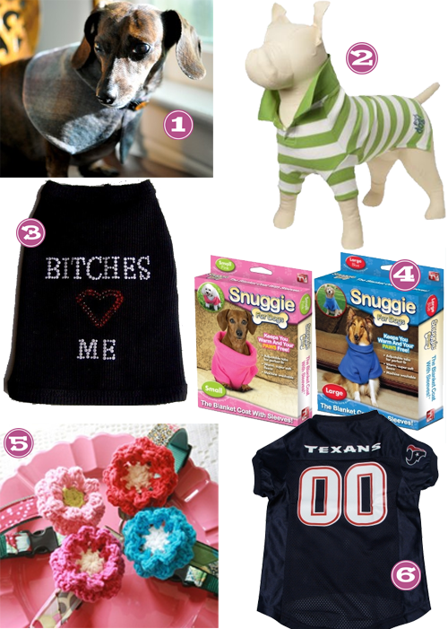

It’s been a fair while since I forced my weiners into some fashionable duds… let’s call it a “holiday break”. Well, breaks over little ones… let’s take a look at what I have in store for you during 2010.

- Etsy, Bugduds– Sophisticated, just what every weiner should be.
- Old Navy, Rugby Striped Pique Polos – Preppy and cute. The way I like em!
- Etsy, Miascloset – This is totally my little boy Luca… Chick.Magnet.
- Petsmart, Snuggie – These are all the rage. Looks like a pancho to me, but I bet my babes will be cute in them!
- Etsy, Shopmimigreen – I bought one of these for Zoe, but being that she’s so tiny.. the flower was about the size of her head at the time… I’m feeling 2010 as the year she might finally be able to sport it.
- Petsmart, Texans Jersey – This one is for your dad, pups. He’s still a fan no matter how many times they lose. We probably need to show him some support.


Recent Comments